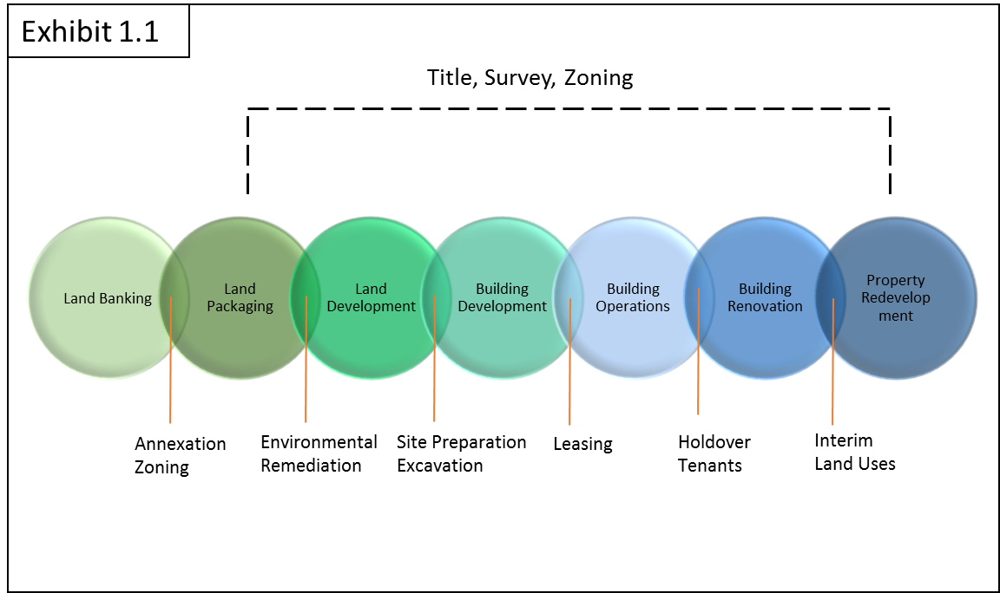
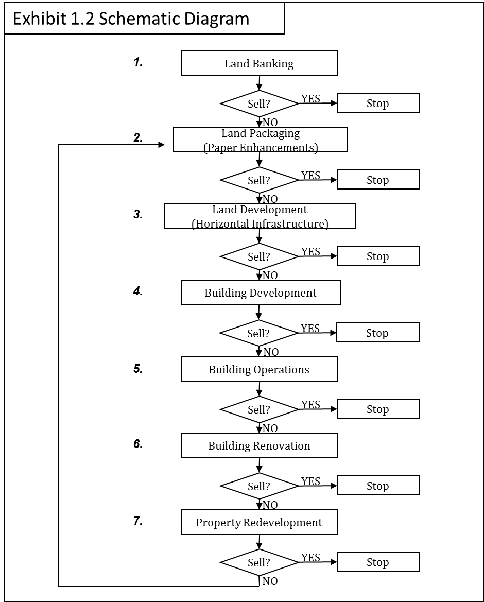
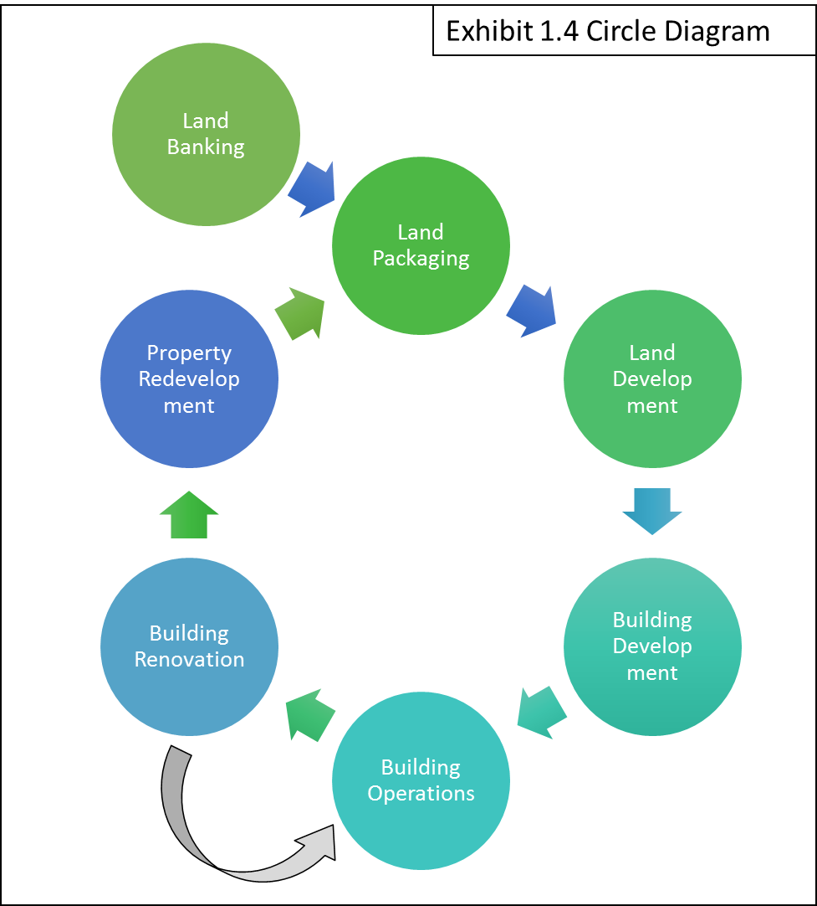

Real Estate Development Matrix
Development Process
We approach Real Estate Development Process holistically, from the time a land parcel is considered a "green field" (Land Banking) through the various stages until it becomes a "brown field" and is ready for Property Redevelopment. The Process is explained below using four (4) diagrams: a Venn diagram, a schematic diagram, a box diagram, and a circle diagram. Each diagram illustrates the same process; however providing slightly different perspectives and nuances on the relationships between the stages.
A Venn Diagram Description
This Venn Diagram in Exhibit 1.1 presents the seven-stage Real Estate Development Process and illustrates that the development stages are not neatly separated, rather they overlap to some extent. Effectively, a developer in one stage may capture some of the value in the next stage of development by incurring some costs and risks associated with the next stage. In doing so, the developer reduces the risks in the next stage and hopefully enhances value of the project to the next stage developer.
The Schematic Description
The schematic diagram in Exhibit 1.2 illustrates that decisions are made each stage of the Real Estate Development Process is relative to the creation of value. Each of the developers must make a conscious decision whether or not to sell to a third party or to continue to the next stage of development. In effect, the developer decides whether to cash in his chips and leave the table or to let the money ride and move onto the next stage of development.
This diagram shows the order of the stages of development over the life of the real estate project as it moves from "green fields" in the Land Banking stage to the "brown fields" in the Project Redevelopment Stage. Both of these stages move to the Land Packaging Stage, where the project is redefined in terms of public approvals, market studies, and physical characteristics.
Usually developers are good at one stage of development, but keep reaching back (up) or forward (down) in the process until their inadequacies catch up with them. The critical thing to note is that in each stage, certain tasks have to be completed to create value, and the accomplishment of these tasks require special skills and talents. No one is good at everything, no matter what their mother told them growing up.
The Box Diagram Description
This Box Diagram in Exhibit 1.3 illustrates the seven-stage model and emphasizes that in each stage, the developer "buys one thing and sells another." The developer buys an "opportunity" and captures that opportunity by successfully accomplishing the requisite tasks in that stage. In doing so, the developer creates an "opportunity" for the developer in the next stage of development. If the developer is unsuccessful in creating value by accomplishing the required tasks, then the development stops until it can be restarted by another developer with the necessary vision and skills.
The Circle Diagram
The Circle Diagram in Exhibit 1.4 shows the relationship between each stage of development and demonstrates how the renovated building in the Renovation Stage may recycle back to the Building Operations Stage to be sold to a developer in the Redevelopment Stage. This diagram also illustrates how the Redevelopment Stage continues onto the Packaging Stage, and the cycle begins all over again.
